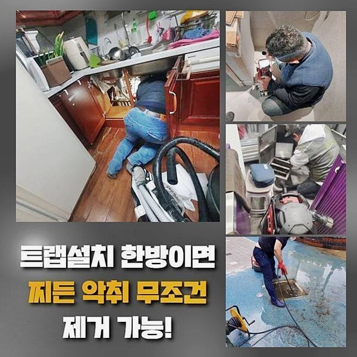
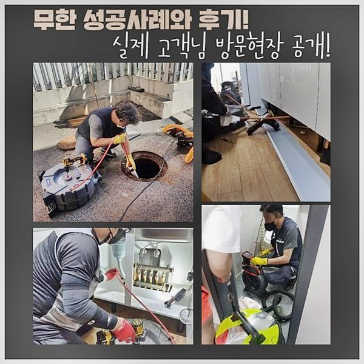
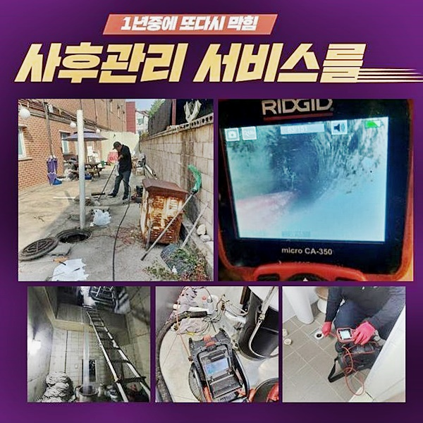
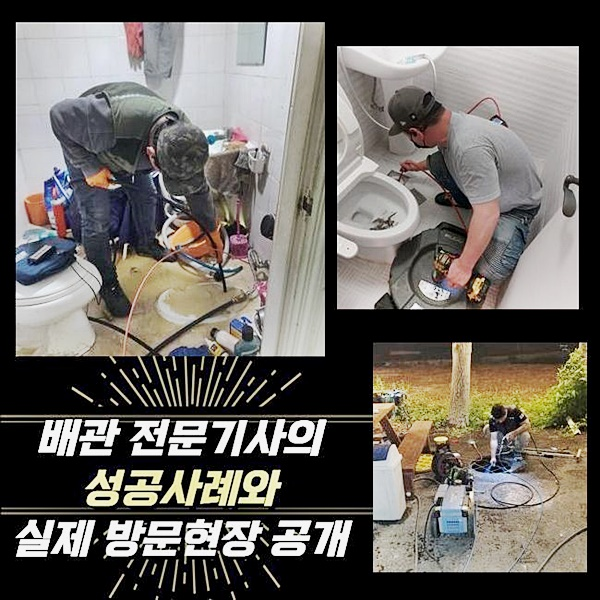
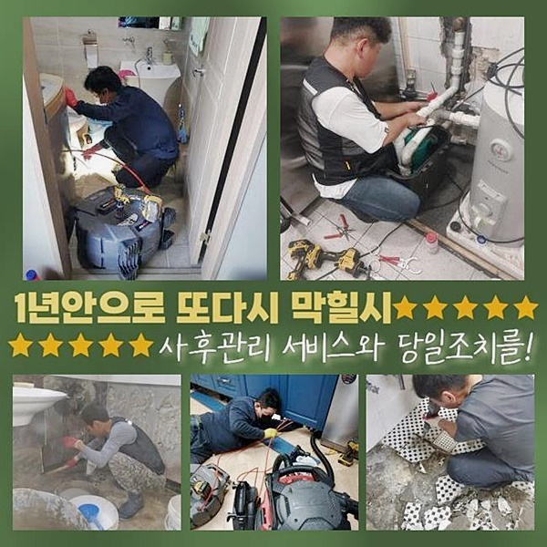
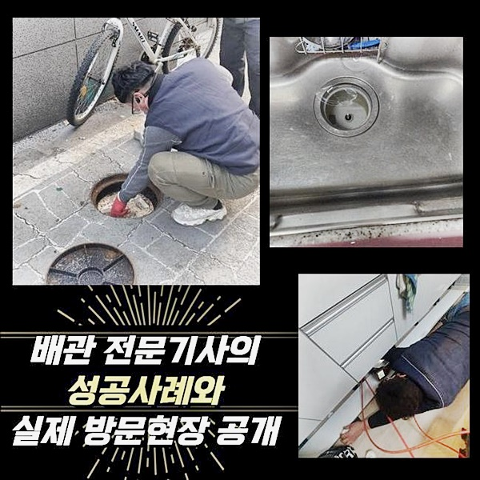

🏠 양주 만송동오수관막힘 광적면 배관내시경카메라 배관전문
양주 광적면 하수구막힘 전문 시공 후기

📋 작업 개요
- 위치: 양주 광적면, 광적면, 양주
- 서비스 유형: 하수구막힘, 배관막힘, 역류해결, 뚫는업체, 배관청소, 고압세척, 설비공사
- 작업 일시: 2024. 10. 5. 10:21
- 업체명: 하수구수사대 (010-5615-2118)
🔍 문제 상황
양주 만송동오수관막힘 광적면 배관내시경카메라 배관전문
현재 자가수리등에 관한 정보가 많아 발코니등에 시멘트들을 바른다거나 화장실쪽에 지저분한 눈금들의 덧방을 혼자서 해주시는 고객님들이 늘어났어요
해당 과정으로 금액을 축소해줄 수 있다면 좋겠으나 종종 변수로 인하여 결함이 발생될 수 있죠
공사자재등이 협소한 하수관으로 빠지게되면 통수장애를 생기게하는데 해당 폐기물등은 수돗물등과 맞닿으면 양생됨에 따라 통로를 막아서는데요
통수가 안될때 저희로 말씀드리면 안정적으로 세척하니 도움이 필요하실때 편히 맡기시면 됩니다
말씀드릴 현장으론 화장실에서 발생된 막힘으로 욕실라인 하수도로 수도가 빠지지 않아 수습을 요청하시는 상담을 진행하셨어요
해결에 최적화된 장치를 챙기고 문제공간에 방문한 뒤 화장실의 라인을 주시해보니 겉에도 석회들이 존재하여 단단히 굳어버린걸 목격했어요
의뢰하셨던 고객님은 앞서 바닥 시공을 혼자서도 해보았는데 갑자기 바닥이 점차 정체된다고 불편을 토로하셨어요

🔎 원인 분석
💡 전문가 진단: 정밀 진단 장비를 사용하여 슬러지의 고착 여부를 판명하고 타격/세척 작업을 실시했습니다.
수직개별배수관에까지 붙어있었던 이물들을 심층부에까지 약간씩 흘려보냈는데 추측하기로는 입구부분에 석회들이 쌓이게된 까닭이 시멘트의 잔재들때문인것 같았죠
라인별로 배수관이 좁아져버린 까닭에 배출되는 일 없이 솟구치는 증상도 보여 빠른 해결책이 필요해보였죠
만일 전형적인 증상일때 간소하게 석션기기로 해결할 수 있으며 흡착된 잔여물의 막힘일 경우 샤프트장비의 운용을 이행합니다
이번 문제공간에서는 고착물들을 약으로 녹여주고 세척을 시켜야되기에 먼저 구간별 집중도를 순서대로 살펴보고 뒤이어 일정 시간동안 대기해주었습니다
통수오류 관련 수리비를 비롯해 궁금해수행하시는 고객님들이 많겠지만 양상에 비롯되어 순서들과 방법이 동일하지 않기에 진단해보고 말씀드리고있습니다
내부에 단단히 흡착되었을 경우 조심성 없이 장비들을 이용하면 하수관로가 손상되고 종종 무작정 힘을주어서 잔해물을 사라지게 하려하다 배수관이 망가져버리는 현장들이 간혹 나타나죠
하수가 고일것만 같다며 전문업체께 연락하기보단 용도에 맞지 않는 공구로 무리하게 뚫다가 바닥이 깨져서 연락하시는 경우도 있는데요
충분히 그럴 수 있겠지만 막힌 배수구를 시정하는 금액측면에서도 예상치못한 지출도 지불해야해서 간소하게 풀어갈 수 있음에도 의도치않게 어려운 처지에 놓일 수 있죠
저희의 경우 작업이 원활할 수 있게 유화제들을 적절히 쓰고 전문적인 장비가 준비되어있기에 개별배수관에 무리들이 가해지지않게 안정적으로 진행해요

🔧 작업 과정
중화제를 투입시키고 일정 시간 후에 수도를 투입시키면 유화를 가속화시켜 부드러운 상태가 되요
연결부위에 붙게되어 돌과 같이 강도가 쎄진 이물질이였으나 약품을 이용해 녹여준 후 흡입기로도 흡입해주었더니 잔재들도 어렵지않게 제거되었죠
이와같이 석션기기로 청소까지 해준다면 이후 단계인 샤프트세척을 어렵지않게 실시할 수 있죠
케이블을 넣어서 엘보라인에 잔재를 제거시키고 확인 차 하수관을 검사했는데요
먼저 내시경 카메라를 하수라인으로 넣어서 통로를 점검하여 어떤문제를 타겟으로하여 청소해줄지 석회들을 포함해 문제요소는 있지않은지 꼼꼼히 원인들을 관찰해보았어요
내시경기기의 경우 저희업체가 메인 배수관으로 뻗어나가는 중심에까지 투입되며 꺾인 부분에서도 빠르게 삽입시킬 수 있어서 원활히 작업들을 진행시켜드려요
초입과 심부에까지 이물질이 고착된 모습으로서 샤프트기기로 전반적으로 청소들을 진행했습니다
저희들이 쓰는 샤프트의 경우 사슬이 빠르게 돌아가며 연결부위에 달라붙은 잔해를 신속히 청소시켜주어서 전반적으로 고착물로 배수설비에 악영향을 미칠때 자주 쓰는데요
흩날리거나 찐득한 이물들만 있는 경우는 없기에 하수도에서 돌과 같이 딱딱해져서 안에 자리해있어서 제거하는 절차가 수반되어야 합니다
작업 중간에 내시경기기를 투입시켜서 검수를 진행하여 이물제거를 진행시켜주었어요
석회와 잔재들까지 함께 깔끔히 청소하고 내시경장치로 검수를 해보니 심층부까지 청결해졌고 기름슬러지나 찌꺼기들고 없어졌답니다
입구에도 있었던 석회의 경우 답답한 기색없이 깔끔히 청소되어 별탈없이 편히 물을 쓰실 수 있게됐습니다
최종적으로 배수점검을 위해 수돗물을 부어서 배수관으로 쏟아내어 통수와 작업이 원만히 진행되었나 체크해보았죠


✅ 작업 완료
역류된다거나 하부장쪽에서 새어버리는 증상들도 없었으며 내시경장치로 하수도를 관찰하니 시원히 빠졌어요
재발확률을 낮추고자 관리에 대해 다시 생각해보시는 것이 큰 영향을 미친다는것을 잊지마세요!
의뢰자께서 셀프로 올바른 수도사용을 유지하게끔 예방법까지 안내하고 모든 작업을 완료시켰죠
비용관련 문의도 상담할 때 안내하니 언제라도 찾아주시면 됩니다!



⚠️ 하수구 배관 막힘 예방 및 관리 가이드
- ✅ 머리카락, 비닐, 물티슈 등 물에 분해되지 않는 이물질은 하수구 유입을 절대 금지해 주세요.
- ✅ 하수구 거름망을 씌우고 모여진 이물질은 주기적으로 쓰레기통에 바로 비워주셔야 합니다.
- ✅ 배관 노후가 심할 경우 이물질이 더 쉽게 걸리므로 주기적인 배관 세척(고압세척 등)을 권장합니다.
- ✅ 작업 후 1년 이내 재발 시 하수구수사대에서 무상 A/S 보증 서비스를 제공합니다.
💡 핵심 정리
- 확실한 장비 작업(내시경 점검 및 샤프트 스케일링)으로 원인을 뿌리 뽑습니다.
- 작업 후 1년 이내에 동일한 부위 재발 시 100% 무상 A/S 서비스를 보장합니다.
- 서울 · 경기 · 인천 전 지역에 24시간 언제든 긴급 출동할 수 있도록 항시 대기 중입니다.
❓ 자주 묻는 질문 (FAQ)
🚨 양주 광적면 하수구막힘 문제로 고민이신가요?
정확한 원인 진단과 확실한 시공으로 재발 없는 해결을 약속드립니다.
24시간 긴급 출동 | 서울 · 경기 · 인천 전지역 | 1년 내 재발 시 무상 A/S